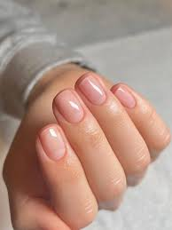
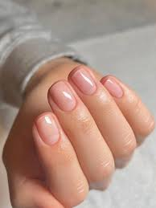
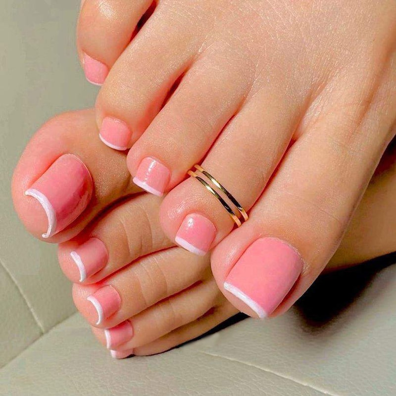
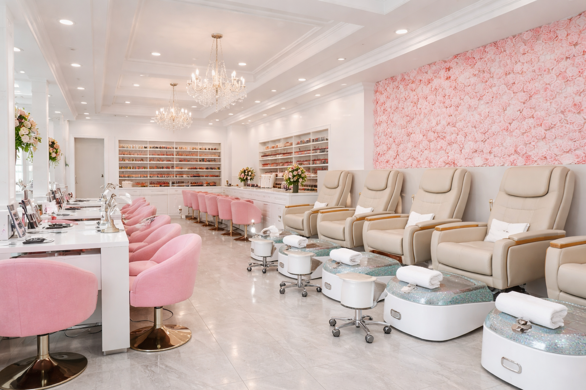
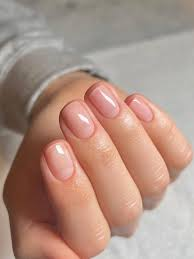

Gallery – Our Work & Salon
Manicures
 

Pedicures

Salon Interior

At Cathy's Nails, we are a proud local, family-owned nail salon serving the Raleigh, Memphis community. We believe nail care is more than just a beauty service—it’s an experience that brings confidence, relaxation, and a personal touch. Our salon offers a welcoming, clean, and friendly environment where clients can enjoy professional manicures, pedicures, gel & acrylic nails, and creative nail art tailored to their style. As a small business, we take pride in supporting our neighborhood, building relationships with our clients, and providing personalized care that larger chains just can’t match. Come experience the difference at Cathy's Nails, where every visit feels like home.
Our talented and licensed nail technicians provide high-quality nail services in a safe, clean, and friendly environment.
Jane has over 5 years of experience in manicures, pedicures, gel & acrylic nails, and nail art. She is licensed in Tennessee and passionate about helping clients feel confident and pampered.
Maria specializes in custom nail art and spa pedicures. She is fully licensed and has been serving the Raleigh Memphis community for 3 years.

Clients choose Cathy's Nails for high-quality nail services, cleanliness, and friendly professionals serving Raleigh, Memphis, and surrounding neighborhoods.
Rating: ★★★★☆ (Based on Google Reviews)
"Love the service and attention to detail. I will visit again!" – Johanna B., Raleigh Memphis
Services received: Pedicure, Manicure, Foot massages, Nail painting, Nail cut & filing, Gel manicures, Callus removal
"Mrs. Ann & Mr. Tony are fantastic! I was skeptical at first because I didn’t know how my nails would turn out, but I’m so glad I tried. I love my nails and the custom nail art. Highly recommend!" – Tamara K., Memphis
Services received: Acrylic nails, Manicure, Nail art, Nail cut & filing, Nail designs, Nail extensions, Nail painting, Sculpted nails
Located in: Covington Crossing
Address: 4970 Raleigh Lagrange Rd, Memphis, TN 38128
Phone: (901) 937-1777
Hours: Mon–Sat: 9am – 7pm | Sun: Closed